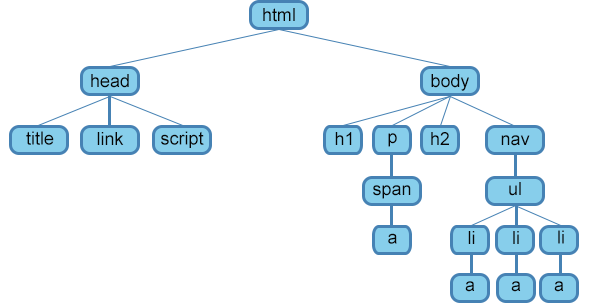

HTML и CSS
Согласло Википедии, HTML (от англ. HyperText Markup Language — «язык гипертекстовой разметки») — стандартизированный язык разметки документов для просмотра веб-страниц в браузере. Веб-браузеры получают HTML документ от сервера по протоколам HTTP/HTTPS или открывают с локального диска, далее интерпретируют код в интерфейс, который будет отображаться на экране монитора.
Если же говорить более простыми словами, то HTML — это специальный язык разметки, который применяется при создании сайтов в интернете. Все браузеры без проблем понимают html и могут переводить его для нас с вами в понятном виде. Любая страница сайта является html-кодом, этот код браузер переводит в дружественный вид для пользователя.
Элементы HTML являются строительными блоками HTML страниц. С помощью HTML разные конструкции, изображения и другие объекты, такие как интерактивная веб-форма, могут быть встроены в отображаемую страницу. HTML предоставляет средства для создания заголовков, абзацев, списков, ссылок, цитат и других элементов. Элементы HTML выделяются тегами.
CSS (от англ. Cascading Style Sheets «каскадные таблицы стилей») — формальный язык описания внешнего вида документа (веб-страницы), написанного с использованием языка разметки (чаще всего HTML или XHTML). Также может применяться к любым XML-документам, например, к SVG или XUL.
CSS используется создателями веб-страниц для задания цветов, шрифтов, стилей, расположения отдельных блоков и других аспектов представления внешнего вида этих веб-страниц. На основную целью разработки CSS является надграждение и отделение описания логической структуры веб-страницы (которое производится с помощью HTML или других языков разметки) от описания внешнего вида этой веб-страницы (которое теперь производится с помощью формального языка CSS). Такое разделение может увеличить доступность документа, предоставить большую гибкость и возможность управления его представлением, а также уменьшить сложность и повторяемость в структурном содержимом.
<!DOCTYPE html> <!-- Объявление формата документа -->
<html>
<head> <!-- Техническая информация о документе -->
<meta charset="UTF-8"> <!-- Определяем кодировку символов документа -->
<title>...</title> <!-- Задаем заголовок документа -->
<link rel="stylesheet" type="text/css" href="style.css"> <!-- Подключаем внешнюю таблицу стилей -->
<script src="script.js"></script> <!-- Подключаем сценарии -->
</head>
<body> <!-- Основная часть документа -->
</body>
</html>
Теги бывают парными и одиночными. Парные теги могут содержать текст и другие теги. У парных тегов, в отличие от одиночных, есть вторая половинка — закрывающий тег:
<h1>Текст заголовка</h1>
В закрывающей части парных тегов перед именем ставится символ / («слэш»).
В парные теги можно вкладывать другие теги. Например, как в списках:
<ul> <li>Элемент списка</li> </ul>
У вложенных тегов всегда нужно следить за правильным порядком закрытия. Вложенный тег не может закрываться позже родительского:
<ul><li>Элемент списка</ul></li> <!-- Плохо -->
<ul><li>Элемент списка</li><t/ul> <!-- Хорошо -->
Не все теги можно вкладывать в другие теги, например, тег <h1> нельзя вкладывать в <p>.
Существуют не только парные, но и одиночные теги. Например, тег <img> позволяет добавить картинку в разметку.
Сам по себе <img> не имеет смысла. Чтобы этот тег был действительно полезен, необходимо написать внутри него адрес, ведущий к картинке. Делается это с помощью атрибута src:
<img src="keks.png">
У тега может быть несколько атрибутов. В этом случае они пишутся через пробел:
<тег атрибут1="значение1" атрибут2="значение2">
Например, картинке при желании можно задать размеры:
<img src="keks.png" width="200" height="100">
Код, заключённый между символами <!-- и -->, работать не будет. Если эти символы удалить, то код заработает, это называется «раскомментировать». С помощью комментариев обычно временно отключают какой-то код или оставляют подсказки и разъяснения.
<!-- Это комментарий в HTML -->
Язык CSS отвечает за внешний вид страницы.
С помощью CSS можно задавать параметры для любого тега: ширину и высоту, отступы, цвет и размер шрифта, фон и так далее. Все эти параметры задаются с помощью свойств в следующем формате:
свойство: значение;
Например:
color: red;
padding: 10px;
Стили к тегам добавляются чаще всего при помощи атрибута class.
Например, если мы хотим, чтобы определённые стили, описанные, допустим, в классе feature-kitten, применились к тегу <p>, то в разметке напишем так:
<p class="feature-kitten">...</p>
Можно сказать, что CSS-правило — это группа свойств и их значений, которая целиком применяется к тем тегам, на которые указывает селектор.
И выглядит это так:
селектор {
свойство1: значение;
свойство2: значение;
}
Задавать стили можно не только с помощью атрибута class, но и по тегам. Селектор указывает, к каким тегам применятся свойства из CSS-правила. Селекторы по тегам работают проще всего: они выбирают все теги с подходящим именем.
p { color: red; }
В примере селектором является p, и он выбирает все теги с именем p (то есть теги <p>), а теги с другим именем, например h1, не выбирает.
Когда же стилизация задаётся по классам, то стили применяются только к тегам с такими классами
.название_класса {
свойство: значение;
}
У HTML-элемента может быть сколько угодно классов, в этом случае они перечисляются в атрибуте class через пробел, например:
<li class="product">Товар</li>
<li class="product hit">Товар, а ещё хит продаж</li>
<li class="product hit sale">Товар, хит продаж и со ски-и-идкой!</li>
Обычно миксование используют так: в один класс выносят общее оформление, а в дополнительных классах описывают его модификации.
В CSS тоже существуют комментарии, их отличие от HTML-комментариев в том, что код или подсказки пишутся между символами /* и */.
| Тег | Описание |
|---|---|
| !--...-- | Используется для добавления комментариев. |
| !DOCTYPE | Объявляет тип документа и предоставляет основную информацию для браузера — его язык и версия. |
| a | Создаёт гипертекстовые ссылки. |
| abbr | Определяет текст как аббревиатуру или акроним. Поясняющий текст задаётся с помощью атрибута title. |
| address | Задает контактные данные автора/владельца документа или статьи. Отображается в браузере курсивом. |
| area | Представляет собой гиперссылку с текстом, соответствующей определенной области на карте-изображении или активную область внутри карты-изображения. Всегда вложен внутрь элемента <map>. |
| article | Раздел контента, который образует независимую часть документа или сайта, например, статья в журнале, запись в блоге, комментарий. |
| aside | Представляет контент страницы, который имеет косвенное отношение к основному контенту страницы/сайта. |
| audio | Загружает звуковой контент на веб-страницу. |
| b | Задает полужирное начертание отрывка текста, не придавая акцент или важность выделенному. |
| base | Задает базовый адрес (URL), относительно которого вычисляются все относительные адреса. Это поможет избежать проблем при переносе страницы в другое место, так как все ссылки будут работать, как и прежде. |
| bdi | Изолирует отрывок текста, написанный на языке, в котором чтение текста происходит справа налево, от остального текста. |
| bdo | Отображает текст в направлении, указанном в атрибуте dir, переопределяя текущее направление написания текста. |
| blockquote | Выделяет текст как цитату, применяется для описания больших цитат. |
| body | Представляет тело документа (содержимое, не относящееся к метаданным документа). |
| br | Перенос текста на новую строку. |
| button | Создает интерактивную кнопку. Элемент может содержать текст или изображение. |
| canvas | Холст-контейнер для динамического отображения изображений, таких как простые изображения, диаграммы, графики и т.п. Для рисования используется скриптовый язык JavaScript. |
| caption | Добавляет подпись к таблице. Вставляется сразу после открывающего тега <table>. |
| cite | Используется для указания источника цитирования. Отображается курсивом. |
| code | Представляет фрагмент программного кода, отображается шрифтом семейства monospace. |
| col | Выбирает для форматирования один или несколько столбцов таблицы, не содержащих информацию одного типа. |
| colgroup | Создает структурную группу столбцов, выделяющую множество логически однородных ячеек. |
| data | Элемент используется для связывания значения атрибута value, которое представлено в машиночитаемом формате и может быть обработано компьютером, с содержимым элемента. |
| datalist | Элемент-контейнер для выпадающего списка элемента <input>. Варианты значений помещаются в элементы <option>. |
| dd | Используется для описания термина из элемента <dt>. |
| del | Помечает текст как удаленный, перечёркивая его. |
| details | Создаёт интерактивный виджет, который пользователь может открыть или закрыть. Представляет собой контейнер для контента, видимый заголовок виджета помещается в элемент <summary>. |
| dfn | Определяет слово как термин, выделяя его курсивом. Текст, идущий следом, должен содержать расшифровку этого термина. |
| dialog | Интерактивный элемент, с которым взаимодействует пользователь для выполнения задачи, например, диалоговое окно, инспектор или окно. Без атрибута open не виден для пользователя. |
| div | Элемент-контейнер для разделов HTML-документа. Используется для группировки блочных элементов с целью форматирования стилями. |
| dl | Элемент-контейнер, внутри которого находятся термин и его описание. |
| dt | Используется для задания термина. |
| em | Выделяет важные фрагменты текста, отображая их курсивом |
| embed | Элемент-контейнер для встраивания внешнего интерактивного контента или плагина. |
| fieldset | Группирует связанные элементы в форме, рисуя рамку вокруг них. |
| figcaption | Заголовок/подпись для элемента <figure>. |
| figure | Самодостаточный элемент-контейнер для такого контента как иллюстрации, диаграммы, фотографии, примеры кода, обычно с подписью. |
| footer | Определяет завершающую область (нижний колонтитул) документа или раздела. |
| form | Форма для сбора и отправки на сервер информации от пользователей. Не работает без атрибута action. |
| h1-h6 | Создают заголовки шести уровней для связанных с ними разделов. |
| head | Элемент-контейнер для метаданных HTML-документа. |
| header | Секция для вводной информации сайта или группы навигационных ссылок. Может содержать один или несколько заголовков, логотип, информацию об авторе. |
| hr | Горизонтальная линия для тематического разделения параграфов. |
| html | Корневой элемент HTML-документа. Сообщает браузеру, что это HTML-документ. Является контейнером для всех остальных html-элементов. |
| i | Выделяет отрывок текста курсивом, не придавая ему дополнительный акцент. |
| iframe | Создает встроенный фрейм, загружая в текущий HTML-документ другой документ. |
| img | Встраивает изображения в HTML-документ с помощью атрибута src, значением которого является адрес встраиваемого изображения. |
| input | Создает многофункциональные поля формы, в которые пользователь может вводить данные. |
| ins | Выделяет текст подчеркиванием. Применяется для выделения изменений, вносимых в документ. |
| kbd | Выделяет текст, который должен быть введён пользователем с клавиатуры, шрифтом семейства monospace. |
| label | Добавляет текстовую метку для элемента <input>. |
| legend | Заголовок элементов формы, сгруппированных с помощью элемента <fieldset>. |
| li | Элемент маркированного или нумерованного списка. |
| link | Определяет отношения между документом и внешним ресурсом. Также используется для подключения внешних таблиц стилей. |
| main | Контейнер для основного уникального содержимого документа. На одной странице должно быть не более одного элемента <main>. |
| map | Создаёт активные области на карте-изображении. Является контейнером для элементов <area>. |
| mark | Выделяет фрагменты текста, помечая их желтым фоном. |
| meta | Используется для хранения дополнительной информации о странице. Эту информацию используют браузеры для обработки страницы, а поисковые системы — для ее индексации. В блоке <head> может быть несколько элементов <meta>, так как в зависимости от используемых атрибутов они несут разную информацию. |
| meter | Индикатор измерения в заданном диапазоне. |
| nav | Раздел документа, содержащий навигационные ссылки по сайту. |
| noscript | Определяет секцию, не поддерживающую сценарий (скрипт). |
| object | Контейнер для встраивания мультимедиа (например, аудио, видео, Java-апплеты, ActiveX, PDF и Flash). Также можно вставить другую веб-страницу в текущий HTML-документ. Для передачи параметров встраиваемого плагина используется элемент <param>. |
| ol | Упорядоченный нумерованный список. Нумерация может быть числовая или алфавитная. |
| optgroup | Контейнер с заголовком для группы элементов <option>. |
| option | Определяет вариант/опцию для выбора в раскрывающемся списке <select>, <optgroup> или <datalist>. |
| output | Поле для вывода результата вычисления, рассчитанного с помощью скрипта. |
| p | Параграфы в тексте. |
| param | Определяет параметры для плагинов, встраиваемых с помощью элемента <object>. |
| picture | Элемент-контейнер, содержащий один элемент <img> и ноль или несколько элементов <source>. Сам по себе ничего не отображает. Дает возможность браузеру выбирать наиболее подходящее изображение. |
| pre | Выводит текст без форматирования, с сохранением пробелов и переносов текста. Может быть использован для отображения компьютерного кода, сообщения электронной почты и т.д. |
| progress | Индикатор выполнения задачи любого рода. |
| q | Определяет краткую цитату. |
| ruby | Контейнер для Восточно-Азиатских символов и их расшифровки. |
| rb | Определяет вложенный в него текст как базовый компонент аннотации. |
| rt | Добавляет краткую характеристику сверху или снизу от символов, заключенных в элементе <ruby>, выводится уменьшенным шрифтом. |
| rtc | Отмечает вложенный в него текст как дополнительную аннотацию. |
| rp | Выводит альтернативный текст в случае если браузер не поддерживает элемент <ruby>. |
| s | Отображает текст, не являющийся актуальным, перечеркнутым. |
| samp | Используется для вывода текста, представляющего результат выполнения программного кода или скрипта, а также системные сообщения. Отображается моноширинным шрифтом. |
| script | Используется для определения сценария на стороне клиента (обычно JavaScript). Содержит либо текст скрипта, либо указывает на внешний файл сценария с помощью атрибута src. |
| section | Определяет логическую область (раздел) страницы, обычно с заголовком. |
| select | Элемент управления, позволяющий выбирать значения из предложенного множества. Варианты значений помещаются в <option>. |
| small | Отображает текст шрифтом меньшего размера. |
| source | Указывает местоположение и тип альтернативных медиаресурсов для элементов <picture>, <video>, <audio>. |
| span | Контейнер для строчных элементов. Можно использовать для форматирования отрывков текста, например, выделения цветом отдельных слов. |
| strong | Расставляет акценты в тексте, выделяя полужирным. |
| style | Подключает встраиваемые таблицы стилей. |
| sub | Задает подстрочное написание символов, например, индекса элемента в химических формулах. |
| summary | Создаёт видимый заголовок для элемента <details>. Отображается с закрашенным треугольником, кликнув по которому можно просмотреть подробности заголовка. |
| sup | Задает надстрочное написание символов. |
| table | Элемент для создания таблицы. |
| tbody | Определяет тело таблицы. |
| td | Создает ячейку таблицы. |
| template | Используется для объявления фрагментов HTML-кода, которые могут быть клонированы и вставлены в документ скриптом. Содержимое элемента не является его дочерним элементом. |
| textarea | Создает большие поля для ввода текста. |
| tfoot | Определяет нижний колонтитул таблицы. |
| th | Создает заголовок ячейки таблицы. |
| thead | Определяет заголовок таблицы. |
| time | Определяет дату/время. |
| title | Заголовок HTML-документа, отображаемый в верхней части строки заголовка браузера. Также может отображаться в результатах поиска, поэтому это следует принимать во внимание предоставление названия. |
| tr | Создает строку таблицы. |
| track | Добавляет субтитры для элементов <audio> и <video>. |
| u | Выделяет отрывок текста подчёркиванием, без дополнительного акцента. |
| ul | Создает маркированный список. |
| var | Выделяет переменные из программ, отображая их курсивом. |
| video | Добавляет на страницу видео-файлы. Поддерживает 3 видео формата: MP4, WebM, Ogg. |
| wbr | Указывает браузеру возможное место разрыва длинной строки. |